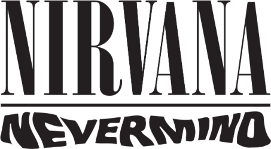

Ho sempre avuto delle tendenze suicide: non mi è mai importato molto di vivere o di morire, a parte il fatto che spesso ho considerato la morte come fine di ogni tormento. Ma il fatto è che la morte, a volte, mi fa anche paura…
Kurt Cobain 1967-1994
Nevermind, prodotto da Butch Vig e mixato da Andy Wallace, oltre che essere il capolavoro assoluto dei Nirvana, costituisce anche uno degli ultimi apici raggiunti nel rock. Il titolo può essere tradotto in non importa e si riferisce al distacco dei giovani dai problemi reali: più esplicitamente menefreghismo rende meglio l’idea. La musica di questo full length è una micidiale mistura di indicibile angoscia, inquietudine, frustrazione e dolore che scaturisce nota dopo nota, come lava da un vulcano, avviluppando l’ascoltatore in antitetiche atmosfere a volte pacate, quasi eteree, ed altre convulse, rabbiose e pregne di devastazione interiore. Il mentore è il carismatico leader Kurt Cobain con il suo particolare vocalism acido/struggente e la sua chitarra in grado di produrre suoni strazianti alternati a cristalline armonie.
Il disco uscì il 24 settembre 1991 ed è il secondo lavoro della formazione statunitense dopo il promettente Bleach del 1989, nonché il primo inciso per una major label. La stupenda e sin troppo significativa cover ritrae un bambino di quattro mesi (Spencer Elden) fotografato in una piscina di Pasadena in California mentre insegue un biglietto da un dollaro infilato in un amo da pesca. Il platter è praticamente perfetto e contiene dodici pezzi più una ghost track che rappresentano la quintessenza della musica grunge. Si tratta di un genere classificabile come alternative rock sviluppatosi a Seattle a partire dalla seconda metà degli anni ottanta; in pratica è il risultato di una commistione tra svariate sonorità -punk, heavy, hardcore e hard rock- che, oltre naturalmente ai Nirvana, è stato portato in auge da gruppi storici come gli Alice In Chains, i Pixies, i Soundgarden, i Pearl Jam e gli Stone Temple Pilots.
La track d’apertura è la famosissima Smell Like Teen Spirit strutturata in modo molto semplice ma devastante come un uragano; splendido il lavoro alla batteria di Dave Grohl, mentre l’assolo avvolgente di chitarra di Cobain che riprende la linea melodica della voce è uno dei più belli nella storia della musica rock. La successiva In Bloom inizia con un lamentoso giro di basso e si caratterizza per una melodiosa ritmica e per il rabbioso refrain. Come As You Are è un altro capolavoro con il basso di Krist Novoselic a farla da padrone e ancora un assolo di chitarra da brividi. Il testo parla, tra l’altro, dell’insicurezza di Kurt a relazionarsi con gli altri sebbene sia comunque pronto ad accettarli. Breed ha una ritmica scatenata decisamente più orientata all’hardcore/punk. Lithium è una vera e propria gemma sospesa tra la melanconia e l’incisività del ritornello. Polly catapulta l’ascoltatore in una dimensione più armoniosa ed è contraddistinta dall’ammaliante voce di Kurt che per le liriche trovò ispirazione da un fatto realmente accaduto a Tacoma nel giugno del 1987: una ragazza di 14 anni tornando da un concerto punk venne rapita da un uomo che l’appese a testa in giù, la violentò e la torturò. La ragazza riuscì fortunatamente a scappare ed il delinquente fu arrestato. Domina il punk in Territorial Pissing che riprende a martellare senza pietà. Drain You (bello il testo che parla d’amore) e Lounge Act hanno un incedere nell'insieme spensierato e gradevole; in quest’ultima canzone va evidenziato un Novoselic in autentico stato di grazia. Si ritorna a ritmi più sostenuti con Stay Away, una song trascinante stranamente mai eseguita dal vivo. La lamentevole quasi ripetitiva voce di Cobain domina l’ottima On A Plain. Spettacolare l’intima ballata acustica Something In The Way che vede la collaborazione di Kirk Canning al violoncello e si riferisce ad un periodo difficile della vita di Cobain costretto a vivere sotto il ponte di Aberdeen perché cacciato di casa; il brano sarà reso immortale nella versione contenuta nell’album Mtv Unplugged In New York del 1994. Dopo dieci minuti di silenzio esplode Endless, Nameless la ghost track: chitarre distorte all’inverosimile ed urla selvagge ti aggrediscono senza pietà! Da notare che questa song non era stata inclusa nelle prime 50.000 copie di Nevermind.
Sui Nirvana, la band del rock felice del male di vivere, è stato detto di tutto: sopravvalutati, incapaci di suonare, in grado solo di copiare altri gruppi come gli Husker Du o i Sonic Youth (provate, ad esempio, a confrontare la magnifica introduzione di Smell Like Teen Spirits con quella di U-Mass dei Pixies o il riff di Come As You Are con quello di Eighties dei Killing Joke); Cobain, poi, è spesso giudicato un cantante mediocre, stonato ed inascoltabile. Ma forse qualcuno è in palese errore visto che, tra l'altro, Nevermind ha venduto oltre 25 milioni di copie in tutto il mondo e l’autorevole rivista Rolling Stone lo colloca al 17° posto della lista dei 500 migliori album di tutti i tempi!
Voglio concludere con queste parole di Kurt Cobain; fanno da presagio alla tragedia imminente che porrà anche fine all’esistenza dei Nirvana dopo soli tre album in studio (il terzo fu In Utero del 1993):
Ho cominciato a farmi regolarmente dopo il successo di Nevermind; non so spiegare il perché, forse perché in realtà sono stato sempre uno scoppiato. Sto cercando di venirne fuori, ma sinceramente non posso dire di esserci ancora riuscito.
Ma non ci riuscirà mai: il 5 aprile 1994 (il giorno è incerto a dire il vero) Cobain si suiciderà con un colpo di fucile lasciando una lettera con un monito finale:
E’ meglio bruciare in fretta che spegnersi lentamente.
Voi che ne pensate?